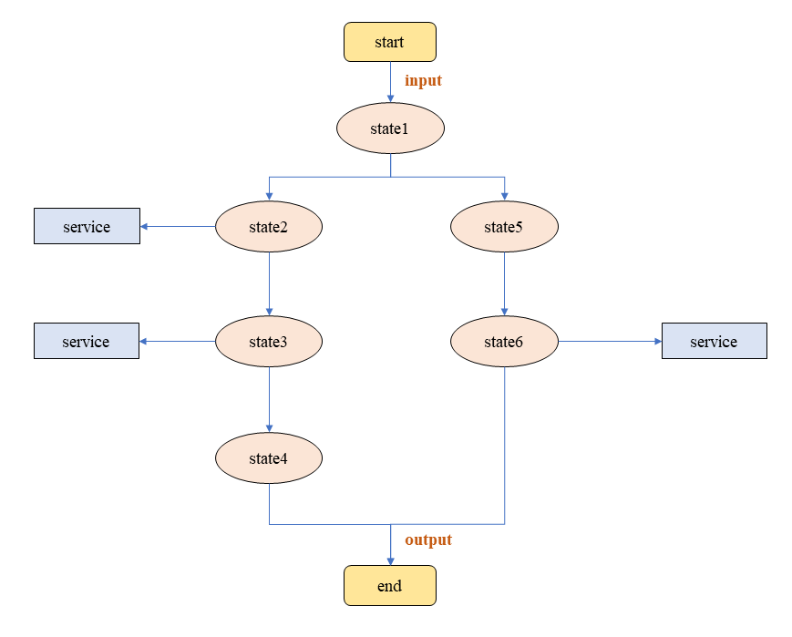
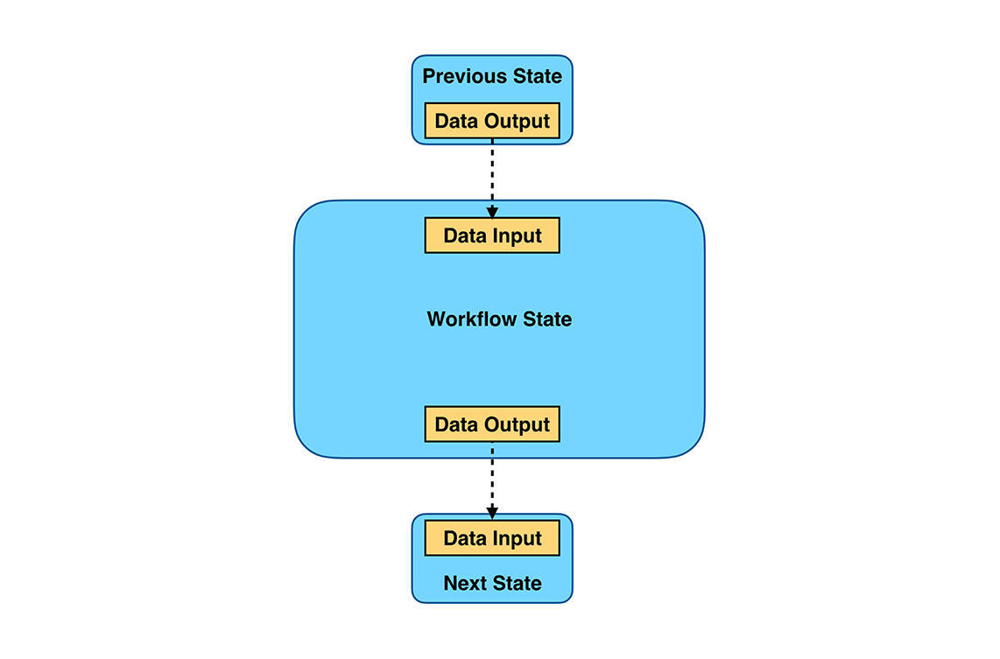
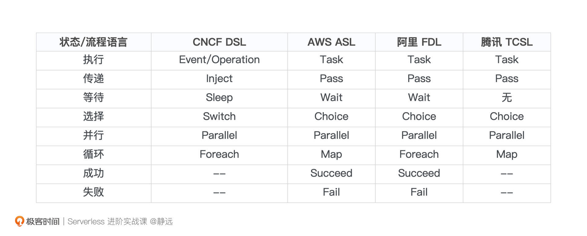
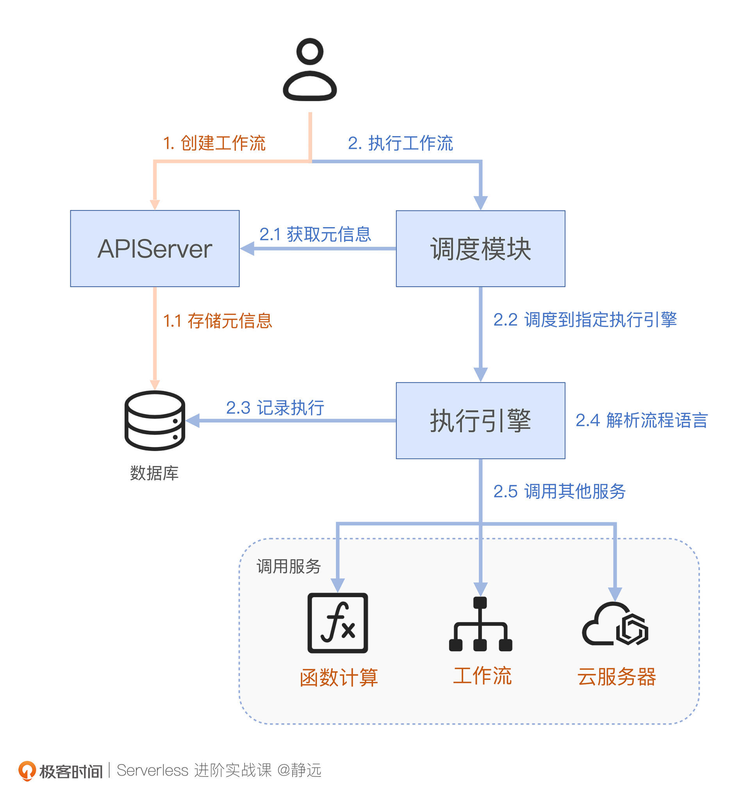
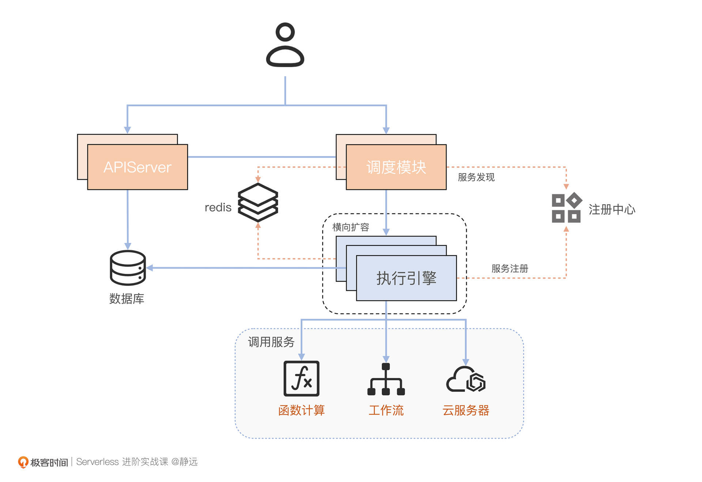
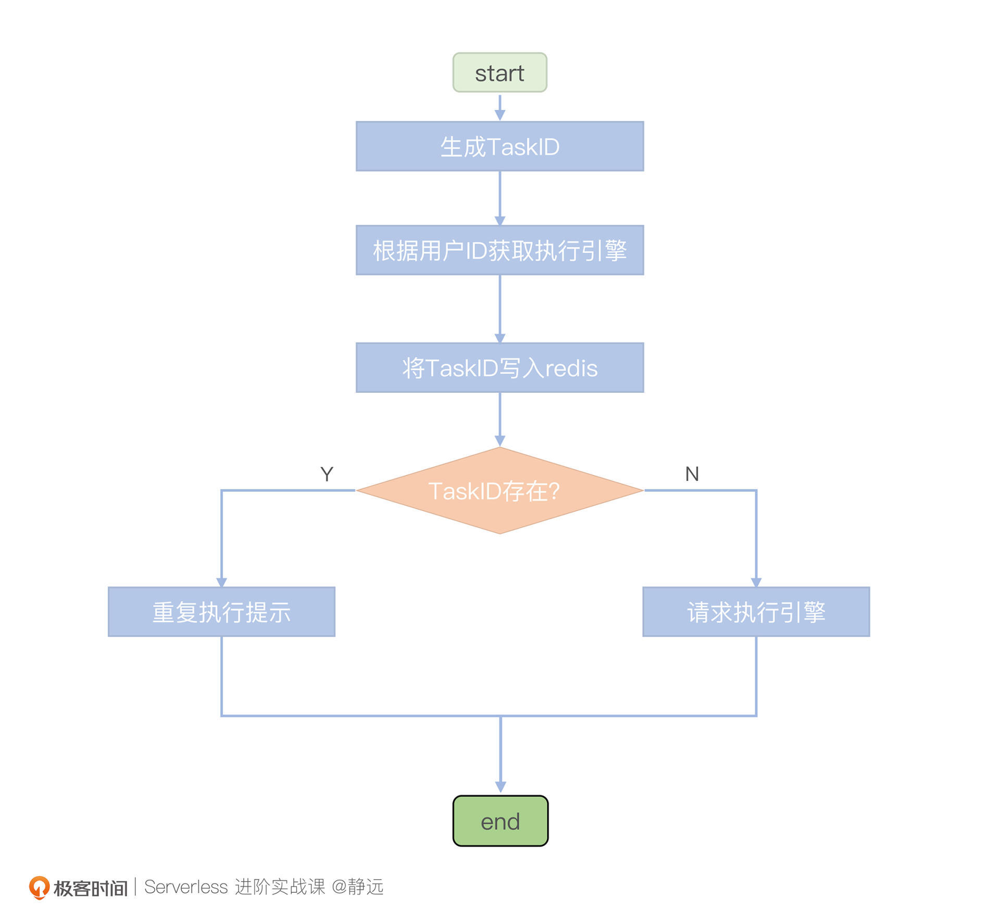

- 00 开篇词 Serverless是降本增效浪潮下的必然选择.md.html
- 00 思维构建 如何在新赛道下进阶Serverless能力？.md.html
- 01 生命周期：函数计算的基本流程是如何执行的？.md.html
- 02 触发器：如何构建事件源与函数计算的纽带？.md.html
- 03 高级属性：应对生产级别的应用，你需要掌握哪些技能？.md.html
- 04 冷启动：如何加快函数的第一次调用过程？.md.html
- 05 扩缩容：如何应对流量的波峰波谷？.md.html
- 06 流量转发：函数在不同情形下是如何执行的？.md.html
- 07 运行时（上）：不同语言形态下的函数在容器中是如何执行的？.md.html
- 08 运行时（下）：不同语言形态下的函数在容器中是如何执行的？.md.html
- 09 小试牛刀（一）：如何利用函数之间的调用解决业务问题？.md.html
- 10 小试牛刀（二）：如何突破VPC网络的速度限制？.md.html
- 11 WebIDE：如何让函数远离繁琐的本地开发模式？.md.html
- 12 编排：如何协调多任务的运行？.md.html
- 13 可观测（上）： 如何构建多维度视角下的Serverless监测体系？.md.html
- 14 可观测（下）： 如何构建多维度视角下的Serverless监测体系？.md.html
- 15 选型：不同阶段的数据应如何存储？.md.html
- 16 动手体验（一）：如何实现业务高效率地开发上线？.md.html
- 17 动手体验（二）：如何在云函数场景下实现一个有状态的服务？.md.html
- 18 实战指南：Serverless沙场老兵的一线使用经验.md.html
- 19 实战进阶（一）：Serverless “连接器” 的能力到底有多大？.md.html
- 20 实战进阶（二）：如何基于智能音箱开发一个BOT技能？.md.html
- 21 实战进阶（三）：传统的服务如何迁移到Serverless平台？.md.html
- 22 私有云：赛马时代的Serverless核心引擎谁能胜出？.md.html
- 23 实战进阶（四）：如何从0到1进阶一个开源引擎？.md.html
- 24 实战进阶（五）：如何从Serverless引擎蜕变成一个Serverless平台？.md.html
- 结束语 在实战中把握事物本质，不断革新.md.html
- 捐赠
12 编排：如何协调多任务的运行？
你好，我是静远。
今天我要和你分享的主题跟“编排”这个词相关，引入这个技术的关键目的，就是处理较为复杂的场景。
我们在前面的课程提到了函数之间的同步和异步策略机制、有状态的业务处理，这些场景虽然和单个函数比起来已经复杂了一些，但函数本身的策略依然可以解决这些问题的。
但是试想一下，如果你遇到每个业务都有几十个函数，需要多个业务配合调用的情况，函数之间的调用是否还可以轻易驾驭呢？
- 电商中订单的创建和管理；
- 文件、视频分片处理后，再整合形成新的报表或视频媒体；
- 广告物料的审核（包括涉政、涉黄、二跳、作弊等）；
- ……
这些是不是想想都复杂？相信你在微服务架构中治理起来都比较困难，更何况现在是更细粒度的函数维度呢？我们知道，服务拆得越细，服务粒度就越小，虽然组装性会更好，但与之相对的，服务治理的难度也就会越大。
那么，是否有一种能力，可以在Serverless的领域中，通过某种方式来协调各个服务和函数的执行，使得我们在享受高弹性、低成本的同时，也降低业务处理上的复杂度呢？这种能力的确存在，业界普遍称之为“工作流（Serverless WorkFlow）”，它就可以应用在上面提到的场景中。
工作流是什么？
什么是工作流呢？CNCF 在它的标准协议说明中给出了一些解释。总的来说，可以这样概括：通过DSL来定义一组结构和模型，它以JSON或YAML的形式存在，服务引擎会根据定义的蓝图来进行调度和执行任务。
云厂商实现的工作流，可以让你能够通过顺序、分支、并行的方式来协调一个或多个分布式任务，这些任务不仅包括函数、还可以是服务和应用的形式，并且通过平台提供的状态跟踪、日志记录和异常重试逻辑，使得你可以从繁琐的工作中解脱出来，享受全托管的服务能力。
有了这个抽象的认知，那么它具体长什么样子，它是如何构成的，它的运行机制是怎么样的？下面，我就带你来一层一层揭开它的面纱。
基本构成
首先，我们通过一个简单示意图看一下工作流的形态。

可以看到，工作流的状态扭转跟我们接触到的状态机的转换是很像的，除状态的转换外，它还有这样几个特性。
- 每个State状态是一个工作节点
它定义了一种特殊的逻辑，决定了工作流当前流程应该执行什么样的控制逻辑，通常包括：操作、传递、选择、并行、等待和循环等等。这些状态通过不同的组合形式，让业务模型的构建变得像平时编程一样简单，极大地丰富了工作流的实际应用场景。
- 工作节点可以关联服务
工作节点可以通过API完成对其他服务的调用。比如最常见的就是结合函数计算，每一个原子业务都会采用云函数实现，而业务之间的关联关系会通过工作流实现。一些厂商为了丰富Serverless工作流的应用场景，通常会和同一云生态下的其他云服务关联，比如阿里云的Serverless Workflow、腾讯云的ASW，就支持云服务API的集成。
- 每个节点有明确的输入和输出
每个节点都可以设定输入和输出来作为数据传递的手段，但在工作流中有两个比较特殊的规则：
第一，当前节点为初始节点时，该节点的输入为工作流的初始输入；
第二，当前节点不为初始节点时，该节点的输入为前一父节点的输出。

因此，你可以将工作流视为一组状态节点的集合以及这些状态节点的转换，每个状态节点都可以关联事件或功能，并且有明确的输入和输出。从解决方案的完整性来看，我们也需要额外地增加日志记录和审计来监视工作流的执行，也需要有安全的校验机制和错误异常处理能力。
DSL是什么？
了解了工作流的基本构成之后，我们先不要着急深入架构设计。还记得我在提到“工作流是什么？”的时候，在定义里提到的“通过DSL来定义一组结构和模型”吗？这个DSL又是什么，它在工作流架构的设计当中，又充当着什么样的角色呢？
DSL（Domain Specific Language），是用来描述和定义业务逻辑的。工作流执行时，会根据你定义的这套逻辑执行。在基本构成的示意图中可以看到，一次执行包含了多个状态，这些状态可以是简单的一次操作，在DSL中，就会表示为如下的状态类型。
Event：会在收到指定触发类型的事件后（比如之前课程提到的S3的对象存储事件），去执行调用动作（调用动作在DSL中被称为action），比如调用某个云函数。这里需要注意的是，触发事件需要严格满足Cloud Events格式协议；
Operation：也会执行调用动作，但是和Event状态不同的是，Operation不需要收到事件触发，而是可以主动执行调用动作；
Sleep：可以将当前执行挂起，并设置等待时间，类似于线程中的Sleep操作。等待结束后，则恢复执行过程；
-
Inject：可以向工作流的输入数据中注入一些静态数据，然后传递给下一个状态。-
这些状态也可以用来控制复杂流程的执行逻辑，在DSL中表示为如下状态类型。
Switch：类似编程语言中的switch关键字，会通过eventConditions关键字来定义多个选项分支，并根据一些筛选条件决定下一状态。在所有条件都不满足时，defaultCondition还可以作为默认下一状态；
Parallel：包含一系列分支，通过branch关键字定义。但和Switch不同的是，这些分支的子状态是并行执行的；
ForEach：类似于编程语言中的迭代器，一般来说，该状态的输入都是数组或者集合的形式，然后循环执行迭代逻辑。
这里我们要注意的是，不同厂商在实现上，虽然大体逻辑大致是遵循CNCF的标准协议的，但在语言的定义和约束上，还是稍微有些不同，且各家的名字也有不同，比如阿里云FDL、腾讯云TCSL、亚马逊ASL等。你可以参考下面我列出的对比表格看一下：

你会发现，部分厂商根据自身情况还增加了一些状态，如成功Succeed和失败Fail，其他的状态除了名字上的差异外，功能上基本相同。我们以阿里云Serverless Workflow举一个例子来加深一下理解：
version: v1
type: flow
steps: #对应DSL中的状态，FDL中称为步骤
- type: parallel #type必须为parallel，表示为并行任务
name: parallelDemo #name为当前步骤的名称
branches: # 表示多个分支，可以对应多个子步骤。
- steps:
- type: task #子步骤的类型为Task
name: function1 #子步骤的名称为function1
# resourceArn表示调用的函数标识
resourceArn: acs:fc:{region}:{accountID}:services/{serviceName}/functions/{functionName}
- steps:
- type: task
name: function2
resourceArn: acs:fc:{region}:{accountID}:services/{serviceName}/functions/{functionName}
你也可以利用resourceArn和pattern的组合，用于集成多个云服务的能力。其中，resourceArn来定义集成的目标服务，使用pattern定义集成模式。这里每一个状态的具体使用字段我就不详细展开了，如果你需要开发和上线，可以根据具体选择的云厂商通读一遍他们的手册。
架构设计
了解完工作流的基本构成和模型的定义语言之后，如果仅仅是使用，那么其实就差不多了，我们只要能熟练地使用语言定义出相应的JSON或者YAML格式的文件就好。
那如果，我们想自己开发一个这样的功能，又要怎么实现呢？我们来看一下它的整体架构示意图：

如图所示，Serverless工作流通常需要具备元信息管理、调度和执行三个核心服务的模块。
- APIServer：负责元信息生命周期的管理，包括状态管理、模板、执行记录等信息；
- 调度服务：根据数据流请求，转发调度到对应的执行引擎，一般来说，它还需要具备负载均衡、限流、故障迁移等能力；
- 执行引擎：负责解析流程语言、执行流程，上报执行历史和调用其他云服务等。
在使用上，用户通过APIServer控制工作流的基本信息，然后通过请求调度模块执行工作流，具体步骤和图片的示意相同。这里，我们要重点关注一下数据面的请求流向：
- 请求到达调度模块后，调度模块首先会从APIServer获取当前工作流的定义内容和执行任务的元信息；
- 调度模块根据请求内容将元信息和请求内容分发到指定的执行引擎；
- 执行引擎会为本次执行生成一些元信息并记录到数据库，因为除了工作流本身的定义外，每一次执行都是无状态的，所以需要设置单独的任务ID ，方便后续做一些请求重入的操作；
- 执行引擎根据流程定义语言语法，解析传入的工作流定义；
- 执行引擎根据解析出的状态有序执行，并根据状态语义调用其他服务进行处理。
最后，当所有State执行结束后，工作流执行引擎会根据最后的输出定义，返回结果。
当然，你也可以拆得更细一些，比如可以将与前端打交道的部分拆出来一个Console服务，将模型配置和模板示例拆分成一个模板服务出来，服务的粒度拆分没有硬性规定。
生产级考虑因素
按照上面的架构，你应该可以实现一个Demo级的工作流了，但是要完成一个生产级别的工作流，还需要考虑高可用、高性能和安全等相关的因素。

首先，我们的三大服务就不能以单点方式呈现了，需要以分布式的方式来部署。每个服务上层通过负载均衡层转发，提供一个对外暴露的HaVIP或者域名。
其次，对于执行引擎来说，因为工作流的核心内容是语义的解析与工作流程的执行，并且每次工作流任务都会启动一个独立的协程或线程工作，因此该引擎的负载较高，需要保证其具备横向扩缩容的能力。通常的做法是部署一个注册中心，然后将执行引擎进行服务注册，调度服务则会通过服务发现了解当前执行引擎的实例情况。
第三，随着应用和调用次数的增加，在生产环境中也需要格外注意消息中间件、数据库中间件、存储中间件的选取，比如执行记录的数据，就不能像DEMO期间那样用MySQL应付，你需要选择诸如Elasticsearch、Apache Doris等相关的存储系统。
第四，考虑到系统的性能以及面向流量洪峰的情况，还可以在调度服务和执行引擎中间采取消息中间件、缓存中间件来处理。比如频繁数据的读取这种情况，就可以将元数据和模板等信息预加载到诸如Redis这样的缓存系统中。
另外，还有两个注意事项没有在我们的示意图中体现。
- 安全相关：你需要将业务服务接入用户认证和权限系统，确保服务的安全性；
- 可观测：工作流面向的是复杂的业务编排场景，发生问题后排查起来难度较高，因此，系统的全链路监测就更加重要了。你需要提供链路状态的转换记录、执行结果和执行耗时等指标，并根据这些指标设定相应的预警机制。
请求可重入
我们再来看请求的可重入。前面我们提到，调度服务要具备请求路由、服务发现、故障转移、实现限流、负载均衡等能力，这些都是我们在实现一个微服务功能需要考虑的治理手段。
除此之外，你还需要关注一下请求重入的能力，保证同一次请求的执行可以落在同一个执行引擎的实例。这样，就避免了同一个请求重复执行的问题发生。
为了保证请求可重入，首先，我们要尽量让同一工作流的任务落在相同的执行引擎上，这里可以通过hash映射的方式，将每个用户ID和执行引擎实例相关联，并写入redis中。
然后，为了区分重复的执行任务，还需要为每个执行任务打上唯一标识。因为不同工作流的执行任务可能会有相同的name，为了保证唯一性和可读性，我这里给你提供一种方式来生成任务ID：
TaskID = UserName|workFlowName|TaskName
将TaskID与执行引擎实例的关联关系记录在Redis中，每次执行前，就可以判断当前的执行请求是否已经被执行了，这样，就可以避免重复的执行任务。

需要注意的是，当某个执行引擎出现故障时，调度模块会将Redis中故障执行引擎的所有执行任务全部调度到其他实例上，以此实现任务的迁移，保证整个系统的稳定性。当然，你也可以选择其他的K-V中间件来实现这个思路。
语法解析流程
对基本的架构了解清楚之后，我们来看一下执行引擎的语法解析是如何实现的。
前面我们提到，工作流的定义格式以JSON和YAML的形式存在，我们需要先解析定义的文件信息，然后再按照顺序去执行每个定义好的状态State。工作流内，*状态之间的关系是具备数据结构中*“*n叉树*”特征的，所以，可以采用深度优先的遍历思想来执行工作流中的每一个状态。
我这里根据DSL的状态分类给出了一段核心处理过程的代码，为了便于你理解，我采取switch…case的方式进行，你可以选择更好的设计模式来实施：
func (flow *Flow) ProcessState(input *Input, flowDefinition *FlowDefinition) *Output {
...
var output *Output
state := flow.getStartState(flowDefinition)
for {
switch state.GetType() {
case api.Event:
output = flow.processEvent(state, input)
case api.Operation:
output = flow.processOperation(state, input)
case api.Inject:
output = flow.processSleep(state, input)
case api.Switch:
output = flow.processSwitch(state, input)
case api.Parallel:
output = flow.processParallel(state, input)
case api.Foreach:
output = flow.processForeach(state, input)
default:
flow.logger.Errorf("invaid state type: %v", state)
...
break
}
if output.Error != nil {
break
}
// 遍历到最后一个state退出
state = state.NextState(flowDefinition)
if state == nil {
break
}
// 当前state的输出为下一state的输入
input.Input = output.Output
}
return output
}
接下来，我们就根据示意代码理解一遍语法解析的流程。
按照深度优先的遍历原则，我们首先需要根据定义内容获取开始状态，并将开始状态作为当前状态，同时将调用请求中的输入数据作为开始状态的输入。
接着，根据当前状态的状态类型选择指定的处理流程，比如Event类型，你的processEvent方法实现就可以根据State中的Action去调用相关服务的API接口，来执行该次任务。如果是Parallel状态，就可以为每个状态子任务启动一个协程或者线程去执行，然后同步等待所有子状态执行完，再将结果返回。
当前状态处理完成后，再获取下一状态作为当前状态，并将当前状态的输出作为下一状态执行时的输入。如上述代码中的state.NextState(flowDefinition)。
最后，一直到当前状态不存在下一状态时，就完成了整个工作流的执行，并且将最后一个状态的输出作为整个工作流的输出来返回。
到这里，关于工作流的几个核心要点就讲解得差不多了。其实除了上面提到的这些，要做一个功能比较完善的工作流解决方案，像计量计费、支持回调、如何设定通用的调用协议等，也都需要留意。
是不是还意犹未尽呢？提前预告一下，我在第16节课也会跟你一起动手，体验基于模板的核心理念以及快速构建服务的上线方法，其中，就包含了单函数模板、多函数编排的具体实操以及构建模板的方法，让你不仅知道原理，还会动手实战。
小结
这节课，我向你介绍了协调多任务执行的编排技术——工作流。
首先，我们要知道，工作流可以用于多个函数和子流程的编排和协调执行，像订单等事务型业务，多媒体大文件处理，数据流水线作业自动化运维等场景都会用到工作流。
再来，几个厂商描述和定义业务逻辑的实现虽然不太相同，但基本都遵循CNCF的规范。你可以通过顺序、分支、并行等方式来协调一个或多个分布式任务，这些任务不仅包括函数，还可以是服务和应用的形式。
工作流的核心构成，包括流程的定义、流程的解析和各节点的输入输出。我们可以通过DSL语言来编排各个节点状态，这些节点包括操作、并行、选择、延迟等8个常用的状态。
在架构设计上，我们需要关注它的三大核心服务：APIServer、调度服务和执行引擎。但如果你是一个平台设计者，还需要考虑安全、可观测、计量计费、日志存储等多个辅助功能项，才能完整地设计出一个解决方案。
希望通过这节课，你能发现Serverless另一个强大的功能，除了函数计算的形态，工作流在并行调用、批处理、事务型场景都发挥着巨大的作用，Server Less is More，并不是一句空话。
思考题
好了，这节课到这里也就结束了，最后我给你留了一个思考题。
工作流执行引擎的执行记录是否需要一直保存？如果不需要，你打算如何设计一个清理程序？需要考虑哪些要点呢？
欢迎在留言区写下你的思考和答案，我们一起交流讨论。感谢你的阅读，也欢迎你把这节课分享给更多的朋友一起交流讨论。
延伸阅读
CNCF Serverless WG workflow 小组制定了一个完整的协议Serverless Workflow Specification，上面不仅给出了规范，还给出了相关使用案例。
© 2019 - 2023 Liangliang Lee. Powered by gin and hexo-theme-book.